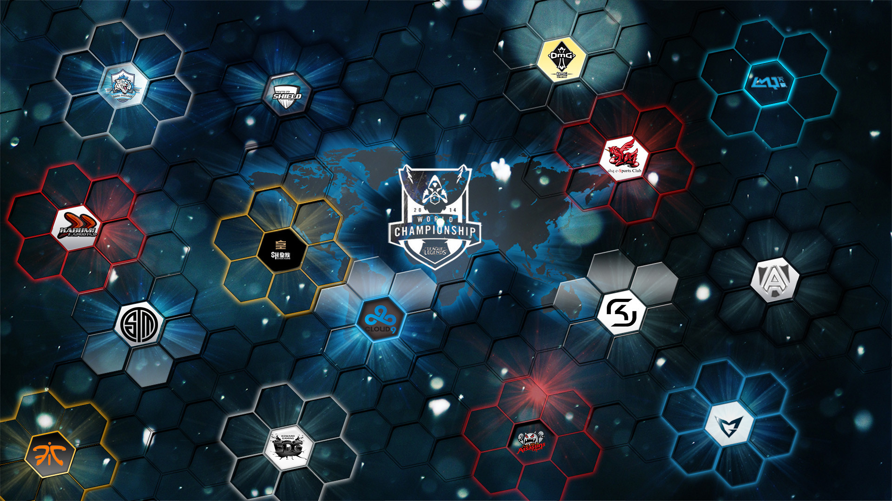
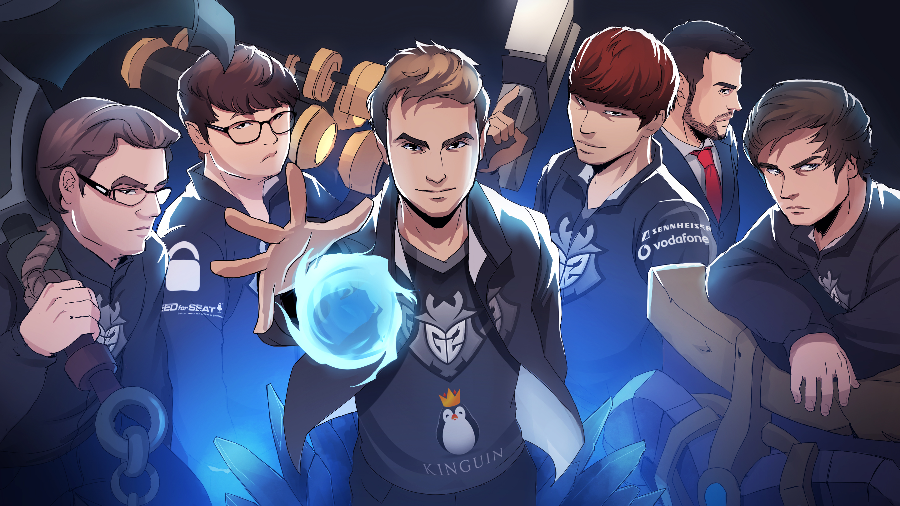
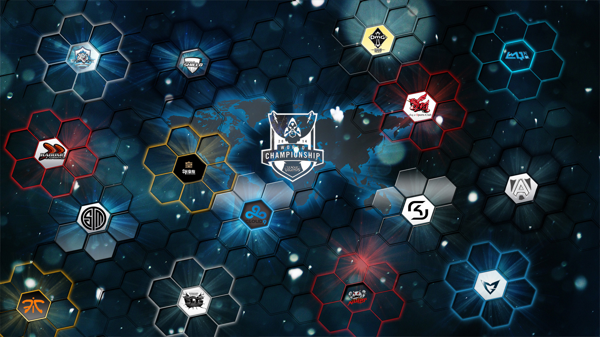
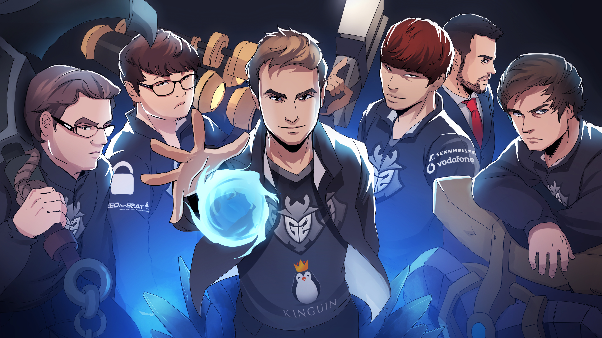
 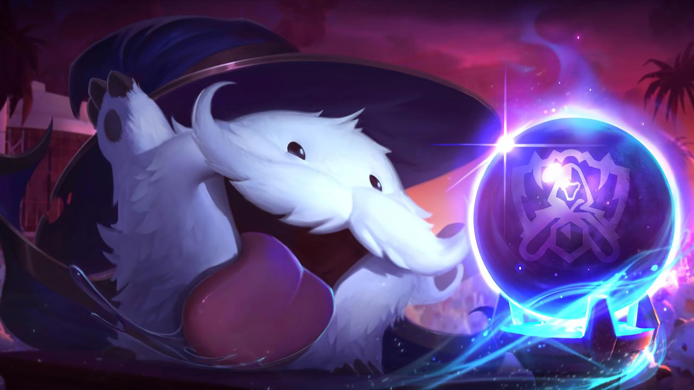
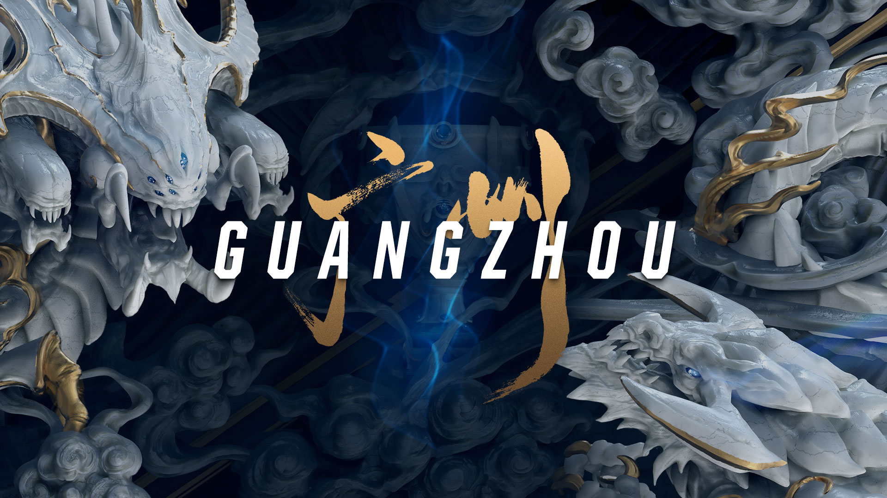
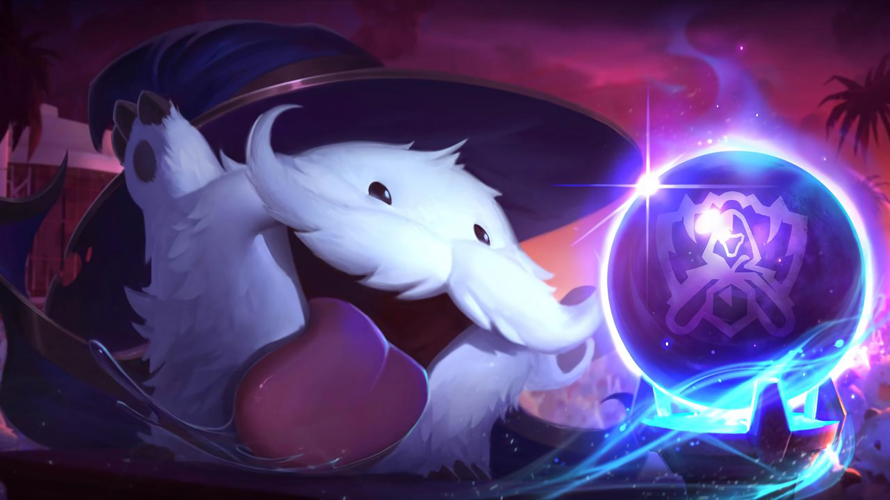
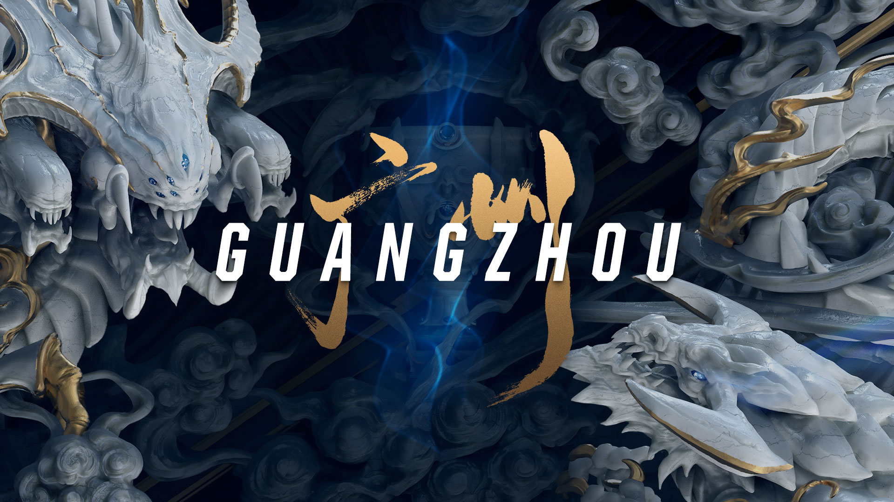


 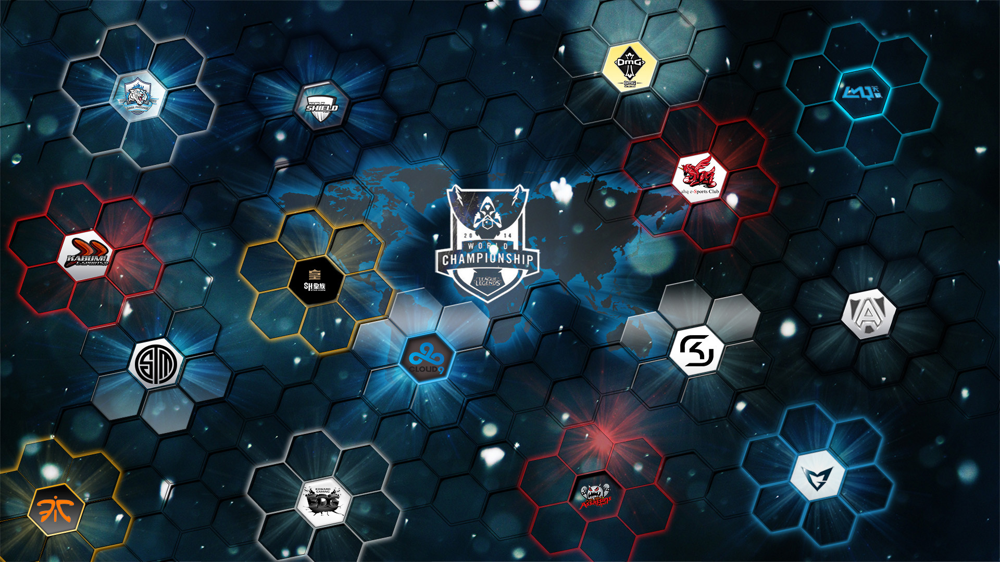
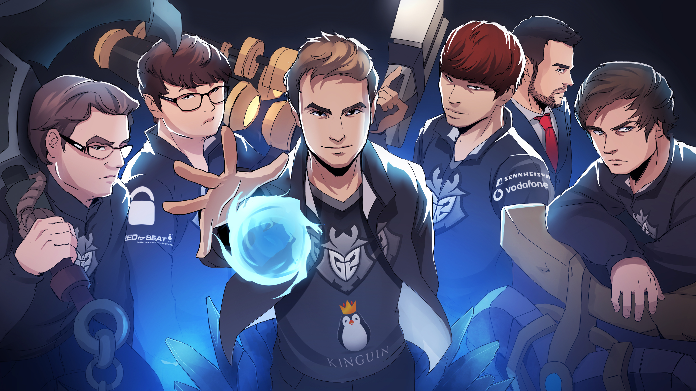
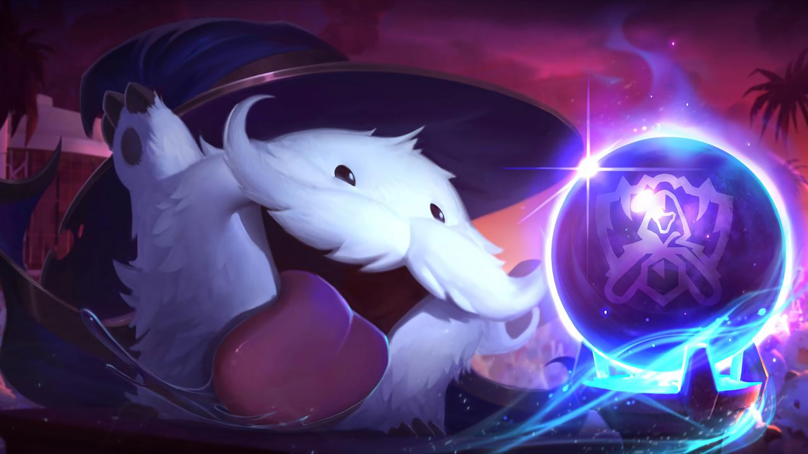
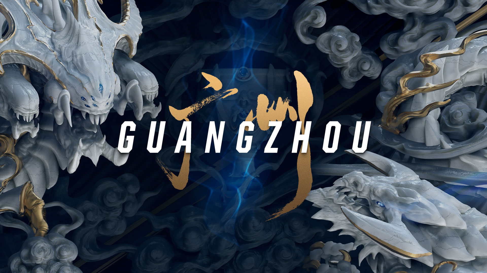
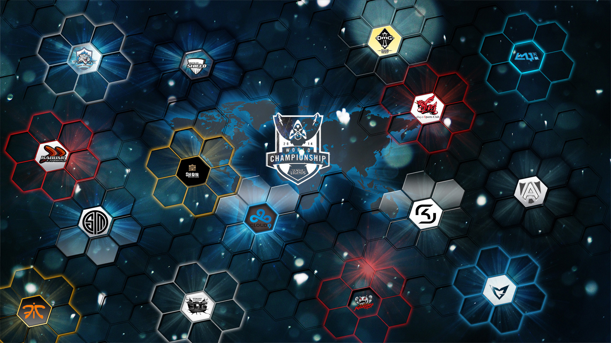
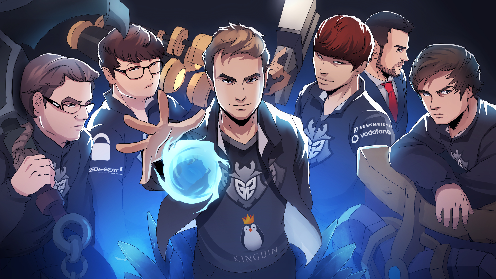
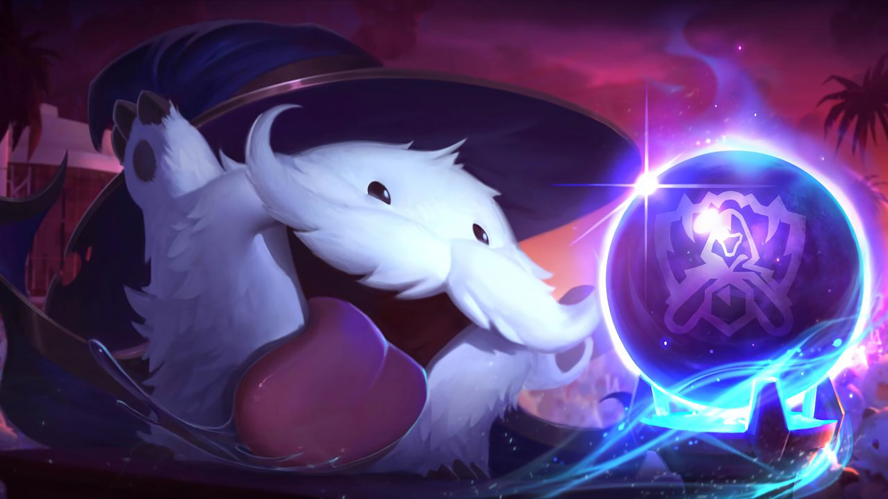
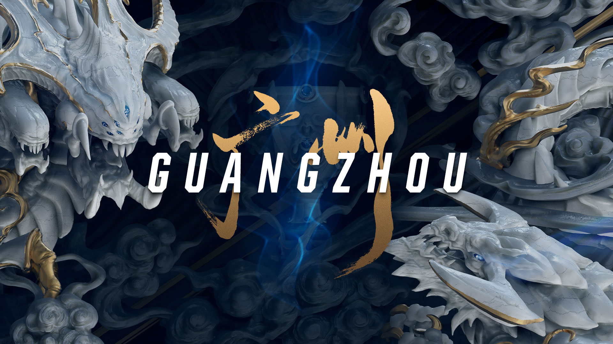
We are gamers
Dette online magasin byder på historien om indiecompaniet, Riot Games. Samt fortællingen om det første verdensmesterskab, og hvordan spillet udviklede sig på den professionelle scene gennem årene. Der kan derudover læses om nogle af de hardcore spillere, som til dagligt stræber om at være den bedste, og hvis det ikke var nok, fortæller en dansk coach om sine oplevelser.